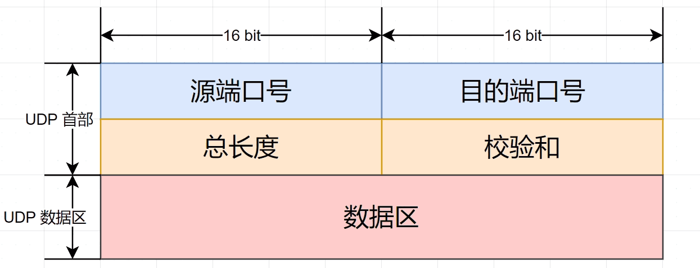

计算机网络(三)UDP基础
1. UDP的头部格式是什么样的？⭐

UDP 头部具有以下字段：
- 源端口（Source Port）：16 位字段，表示发送方的端口号。
- 目标端口（Destination Port）：16 位字段，表示接收方的端口号。
- 长度（Length）：16 位字段，表示 UDP 数据报（包括头部和数据部分）的总长度，以字节为单位。最小长度为 8 字节（只有头部没有数据），最大长度为 65,535 字节。
- 校验和（Checksum）：16 位字段，用于检测 UDP 数据报在传输过程中是否发生了错误。校验和的计算包括 UDP 头部和数据部分。
- 数据（Data）：可变长度的数据部分，用于传输应用层的数据。
UDP 头部相比于 TCP 头部较为简单，不包含像序列号、确认号、状态标志等机制。UDP 通过提供简单的无连接传输服务，但不提供可靠性、流量控制和拥塞控制等功能。
2. TCP、UDP的区别 ⭐⭐⭐⭐
- 1.连接性：
TCP 是面向连接的协议，通过建立可靠的连接来传输数据。在通信之前，发送方和接收方需要进行三次握手建立连接，并且提供可靠的数据传输、流量控制、拥塞控制等机制。
UDP 是无连接的协议，发送方可以直接向接收方发送数据报，不需要进行握手或建立连接。UDP 提供了一个简单的不可靠的数据传输服务，不保证数据的可靠性和顺序性。
- 2.可靠性：
TCP 提供可靠的数据传输，通过序列号、确认机制、重传机制等保证数据的可靠性。如果有数据包丢失或损坏，TCP 会自动重传丢失的数据。
UDP 不提供可靠性保证，发送的数据报可能会丢失、重复、乱序等。应用程序负责处理丢失和重复的数据包，并自行处理错误检测和纠正。
- 3.数据包大小：
TCP 没有固定的数据报大小限制，能够适应不同大小的数据传输。
UDP 每个数据报的大小被限制在 65,535 字节，超过该大小的数据需要进行分片传输。
- 4.速度和效率：
由于 TCP 提供的可靠性机制、流量控制和拥塞控制，以及连接的建立和维护，相对于 UDP 而言，其在传输速度和效率方面会有一定的降低。
UDP 在没有连接建立和维护的情况下，没有额外的开销，因此在速度和效率方面比 TCP 更高。
3. TCP、UDP的优缺点⭐⭐⭐
TCP 的优点：
- 可靠性：TCP 提供可靠的数据传输，通过序列号、确认机制、重传机制等保证数据的可靠性。如果有数据包丢失或损坏，TCP 会自动重传丢失的数据。
- 顺序性：TCP 保证数据的顺序传输，接收方会按照发送方的顺序重新组装数据包，确保数据的正确顺序传递给应用程序。
- 流量控制：TCP 使用滑动窗口机制进行流量控制，根据接收方的接收能力来控制发送方的发送速度，避免了数据的丢失和拥塞。
- 拥塞控制：TCP 使用拥塞窗口机制进行拥塞控制，通过动态调整发送速率来减少网络拥塞，并避免网络崩溃。
TCP 的缺点：
- 开销较大：由于 TCP 保证了可靠性、顺序性以及流量控制和拥塞控制等机制，需要消耗较多的计算资源和带宽，增加了网络传输的开销和延迟。
- 速度相对较慢：由于 TCP 的可靠性机制和连接的建立和维护，相对于 UDP 而言，其在传输速度上会有一定的降低，特别是在高延迟和高丢包率的网络环境下。
UDP 的优点：
- 低延迟：UDP 不进行连接的建立和维护，没有额外的开销，因此在速度和效率方面比 TCP 更高，并且能够实现低延迟传输。
- 简单轻量：UDP 的头部较小，并且没有复杂的机制，使得它在资源有限的网络设备和嵌入式系统中更容易实现和处理。
UDP 的缺点：
- 不可靠性：UDP 不提供可靠性保证，发送的数据报可能会丢失、重复、乱序等。应用程序需要自行处理丢失和重复的数据包，并自己处理错误检测和纠正。
- 不保证顺序性：UDP 不保证数据的顺序传输，因此接收方可能需要重新组装数据包来保证数据的正确顺序。
4. TCP UDP适用场景⭐
TCP 的适用场景：
- 文件传输：TCP 可以可靠地传输大文件，确保数据的完整性和顺序性。
- Web 浏览：TCP 在 Web 浏览中广泛使用，通过 TCP 可以建立可靠的连接，并传输 HTTP 请求和响应数据。
- 电子邮件：TCP 可以可靠地传输电子邮件，确保邮件的完整性和可靠性。
- 文件下载和上传：TCP 可以在文件下载和上传时提供可靠的传输，确保数据的完整性和顺序性。
- 远程访问：TCP 可以通过远程登录协议（如 SSH）进行远程访问，提供可靠的连接和数据传输。
UDP 的适用场景：
- 实时游戏：UDP 在实时游戏中常被使用，实时性要求高于数据的完整性，UDP 的低延迟和无连接性特点能够满足实时游戏的需求。
- 视频和音频流媒体：UDP 在视频和音频流媒体中被广泛使用，UDP 的低延迟和简单的传输机制适应了实时性要求高的音视频数据传输。
- DNS 查询：UDP 通常用于 DNS 查询，由于 DNS 查询通常是简短的请求和响应，UDP 的低延迟和无连接性能够满足查询的需求。
5. 如何让UDP也变得可靠？⭐⭐⭐
- 应用层实现可靠性：应用程序可以在应用层上通过一些机制来实现UDP的可靠性。例如，发送方可以在发送数据前对数据进行冗余校验，接收方可以检查校验和，并请求重传丢失的数据。应用层协议如TFTP（Trivial File Transfer Protocol）就是基于UDP实现的可靠传输协议。
- 增加ACK机制：发送方可以在UDP上实现类似TCP的ACK机制来确认接收到的数据包。当接收方接收到数据包时，发送一个ACK（确认）回执给发送方，告知数据包已成功接收。如果发送方在一定时间内未收到ACK回执，则进行重传。这种方式需要在应用层上实现，增加了额外的开销和复杂度。
- 使用重传机制：重传是一种提高可靠性的方法。发送方可以周期性地检查是否有未收到ACK的数据包，并进行重传。同时，接收方也可以在一定时间内未接收到期望的数据包时请求发送方进行重传。
- 使用确认机制：接收方可以在接收到数据包后向发送方发送确认消息，告知发送方已成功接收。发送方在收到确认消息后，才会发送下一个数据包。
- 应用ARQ（Automatic Repeat Request）协议：ARQ协议是一种使用反馈机制的可靠传输协议。发送方将数据分成多个较小的数据包，接收方在接收到数据包后通过ACK确认，如果发送方未收到确认，则进行重传。
6. 为什么UDP不粘包⭐⭐
TCP为了保证可靠传输并减少额外的开销（每次发包都要验证），采用了基于流的传输，基于流的传输不认为消息是一条一条的，是无保护消息边界的（保护消息边界：指传输协议把数据当做一条独立的消息在网上传输，接收端一次只能接受一条独立的消息）。
UDP则是面向消息传输的，是有保护消息边界的，接收方一次只接受一条独立的信息，所以不存在粘包问题。
具体原理如下：
- 无连接性：UDP是无连接的传输协议，每个UDP数据报都是独立的消息单元，与其他数据报没有关联。在传输层中，每个UDP数据报都会被封装为独立的数据包，并在接收端独立地进行处理，不会和其他数据报合并。
- 固定长度：UDP数据报具有固定的最大长度（65,507字节），因此发送方在发送数据时无需考虑数据报的长度问题，接收方也不需要担心接收时的分割问题。每个UDP数据报都独立发送和接收，不需要拼接或分割。
- 没有流控制和拥塞控制：UDP在传输时没有对流量进行控制，数据报以独立的形式发送和接收。这就意味着发送方无需等待接收方的确认通知，也不会受到网络拥塞的影响。因此，在UDP中，不会出现因控制机制引起的延迟和累积数据导致的粘包现象。
尽管UDP不会出现粘包问题，但由于其不可靠性和无连接性，数据包可能会丢失、重复、乱序等。因此，在使用UDP进行数据传输时，需要对数据的可靠性和顺序性进行额外的处理，例如应用层协议可以在数据中插入序号、校验和等机制，来进行错误检测和纠正。
7. UDP是否支持丢包重传机制？为什么？⭐
UDP（User Datagram Protocol）本身并不支持丢包重传机制，这是因为UDP是一种无连接协议，不提供可靠的数据传输保证。
UDP协议的设计目标是追求简单、轻量级和高效性，相对于TCP（Transmission Control Protocol）而言，UDP在实现上更为简单和快速。为了降低开销和复杂性，UDP缺少一些提供可靠性的机制，包括丢包重传机制。
UDP（User Datagram Protocol）不需要丢包重传机制，主要是基于以下几个原因：
- 实时性要求：UDP常用于实时应用，如音频和视频传输，游戏等。在这些应用中，实时性比可靠性更为重要。丢包重传机制会引入额外的延迟，而UDP的设计目标是尽可能减少延迟，因此不包含此机制。
- 简洁性：UDP是一种简单的协议，相对于TCP而言，其头部开销更小。不包含丢包重传机制可以减少协议的复杂度和开销，使其更轻量级和高效。
- 应用层负责：UDP往往被用于应用层协议中，而不是直接作为传输层协议使用。在应用层协议中，可以自行处理数据的可靠性和丢包问题。应用层可以通过序列号、校验和、确认应答等机制来实现丢包重传，以满足特定的可靠性需求。
- 无连接性：由于UDP是无连接的，发送方不会维护任何关于连接状态的信息，也不会等待接收方的确认。因此，当出现丢包时，发送方无法得知，也无法触发重传动作。
8. UDP与TCP相比，哪种协议在传输效率方面更高？⭐
从传输效率的角度来看，UDP相对来说更高。以下是UDP相对于TCP在传输效率方面的优势：
- 无连接性：UDP是一种无连接的协议，不需要在发送数据之前进行握手和建立连接。这意味着UDP没有连接建立和断开的延迟，可以直接发送数据。相比之下，TCP需要进行三次握手和四次挥手，这些额外的握手和挥手过程会增加延迟。
- 头部开销小：UDP头部相对较小，只有8字节（不包括选项），而TCP头部则有至少20字节。UDP的较小头部意味着更少的额外开销，可以传输更多实际数据。
- 不保证可靠性和顺序性：UDP不提供可靠性和顺序性的保证，这意味着它不需要进行丢包重传、数据重组和流量控制等机制。相比之下，TCP提供了可靠性和顺序性的保证，需要进行数据重传和拥塞控制等额外的机制，这些机制会带来一定的性能开销。
9. 在网络中，如何减小UDP的传输延迟？⭐
- 减少数据包大小：UDP协议没有拥塞控制机制，因此数据包较大时容易出现丢包的情况。通过减小数据包的大小，可以减少传输时间和丢包的可能性，从而降低传输延迟。可以对数据进行分片或者压缩，将大的数据包拆分为多个小的数据包进行传输。
- 优化数据发送方式：可以使用一些优化技术来减小UDP传输延迟。例如，使用内存映射的方式减少数据从用户空间到内核空间的拷贝次数，或者使用零拷贝技术直接将数据从磁盘读取到网络缓冲区，减少传输中的额外开销。
- 选择合适的传输速率：根据网络的带宽和延迟情况，选择合适的传输速率。如果带宽较高但延迟较高，可以采用较大的数据包和较高的传输速率；如果延迟较低但带宽较低，可以采用较小的数据包和较低的传输速率，以避免拥塞和丢包。
- 合理设置超时时间：为了避免因网络拥塞或延迟导致的长时间阻塞，可以设置合理的超时时间。当超过设定的超时时间后，可以重新发送数据包，以保证传输的及时性。